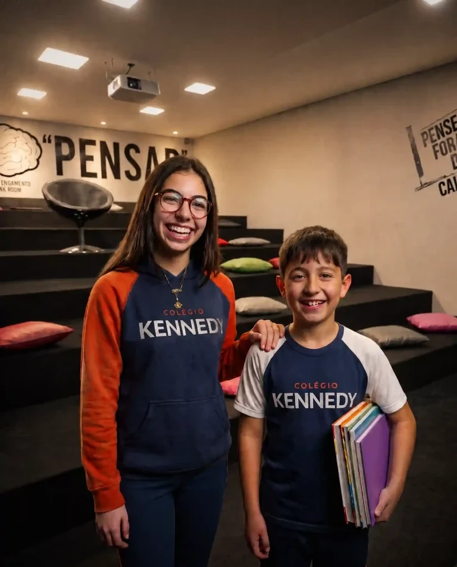

Do Berçário ao Ensino Médio em Porto Alegre.
Matrículas abertas para 2027. Vagas limitadas, garanta a sua agora!
Vagas para 2027 em alta procura
Última atualização em:
58 anos de excelência em educação
Ambientes de aprendizagem inovadores
Turno Integral das 7h às 19h
Corpo docente especializado
DTMA
+800
Recebemos sua solicitação!
Nossa equipe entrará em contato em breve pelo WhatsApp ou e-mail informado.
Redirecionando você para o WhatsApp...
Ocorreu um problema
Não foi possível enviar. Tente novamente ou ligue para nós.

Por que escolher o Colégio Kennedy?
58 anos de excelência em educação, do Berçário ao Ensino Médio, em Porto Alegre
Aprender fazendo, não só decorando
Na Sala do Pensar, Sala Google, Sala Maker e nos laboratórios de Ciências e Línguas, seu filho experimenta, erra e descobre, e o conhecimento fica.
“Excelente colégio. Organizado, limpo, com excelentes profissionais, aulas de inglês, espanhol, robótica além de pacotes opcionais. Super recomendo.”
— Alexandre Santos German, avaliação no Google
Ensino que nunca para de evoluir
Equipe pedagógica com formação superior e constante atualização, para o seu filho aprender sempre com o que há de mais atual.
Sua rotina mais leve, o dia do seu filho mais completo
Horário flexível das 7h às 19h, com atividades recreativas, esportivas e apoio às tarefas escolares. Tranquilidade para você, desenvolvimento para ele.
Seu filho floresce quando se sente seguro
Segurança e acolhimento em todas as etapas, com rotina organizada e integração social e afetiva.
“O bom atendimento começa na atenção do porteiro, um amigão vigilante dos alunos, e se estende pelas responsáveis pelos portões internos chegando aos professores e funcionários em geral.”
— Marlin Munhos Ambrozi, avaliação no Google
Preparo para a vida, não só para a prova
Desenvolvimento cognitivo, socioemocional e ético, preparando o aluno para o vestibular e, sobretudo, para os desafios do mundo real.
“Meus filhos estudam há 12 anos lá, estão concluindo o Ensino Médio este ano... Já estou com saudades de vocês e do colégio.”
— Lenir Morais, avaliação no Google
Do Berçário ao Ensino Médio
Uma jornada completa de aprendizado, em cada fase da vida do seu filho
Depoimentos verificáveis, direto do perfil do Colégio Kennedy no Google
4,6 ★85 avaliações no Google
★★★★★
"Meu filho estuda desde o berçário no Kennedy, hoje ele está no segundo ano. A cada ano uma surpresa agradável!! Foi a melhor escolha que fizemos, meu filho ama a escola."
★★★★★
"Escola maravilhosa! Meu filho vai desde os 7 meses, sempre foram muito atenciosos e prestativos! Adoramos o ambiente familiar e acolhedor. Recomendo mil vezes!!"
★★★★★
"Ótima escola, sou estudante agora do fundamental 2 que passei, melhor escola de POA!"
★★★★★
"Escola com ampla infraestrutura, atende as necessidades de qualquer tipo de aluno e agrada até os pais mais exigentes. Meu filho estuda lá, gosto muito do atendimento e do valor. Para o pessoal da zona norte de POA é uma ótima opção não filiada a nenhum tipo de religião."
★★★★★
"EXCELENTE!!! Meus filhos estudam há 12 anos lá, estão concluindo o Ensino Médio este ano... Já estou com saudades de vocês e do colégio."
★★★★★
"Excelente colégio. Organizado, limpo, com excelentes profissionais, aulas de inglês, espanhol, robótica além de pacotes opcionais. Super recomendo."
★★★★★
"Tenho dois netos pequenos que são alunos, o bom atendimento começa na atenção do porteiro, um amigão vigilante dos alunos e se estende pelas responsáveis pelos portões internos chegando aos professores e funcionários em geral."
★★★★★
"O preço é alto, mas o valor entregue é maior."
★★★★★
"Eu estudei nesta escola há 50 anos atrás e já era de ótima qualidade, hoje minha neta estuda e realmente o que já era ótimo virou excelente."
★★★★★
"Excelente!! É uma escola que realmente prepara os alunos para a vida. O mais interessante é que, mesmo tendo uma grande estrutura, mantém um ambiente acolhedor onde todo mundo se conhece pelo nome. Essa proximidade e o carinho com cada estudante fazem toda a diferença..."
Vagas limitadas para 2027!
Não deixe para a última hora. Preencha o formulário e nossa equipe entra em contato com todas as informações sobre mensalidades e processo de matrícula. Conheça nossas condições e bolsas disponíveis.
Venha fazer parte da nossa família. Junte-se às famílias que já confiam na educação do Kennedy.
“O preço é alto, mas o valor entregue é maior.”
— Douglas Perez, avaliação no Google